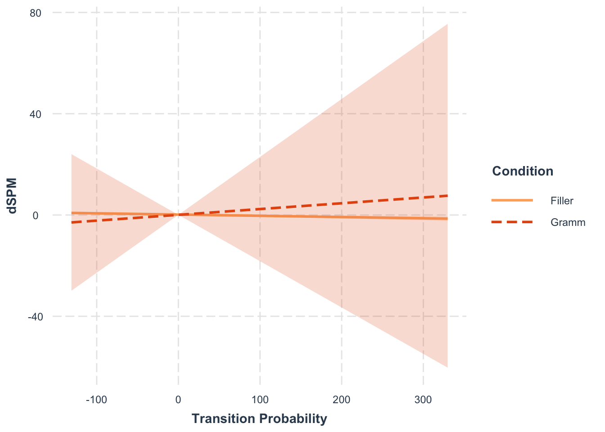
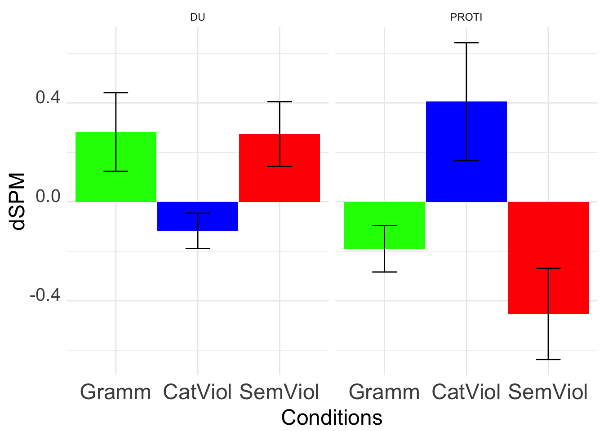
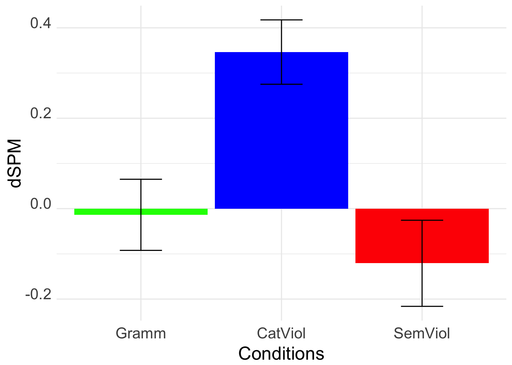

Code
path <- getwd()path <- getwd()library(lme4)
library(tidyverse)
library(glmm)
library(ggplot2)
library(afex)
library(trimr)
require(car)
require(lattice)
require(itsadug)
library(ggpubr)
library(languageR)
library(plotrix)
library(Hmisc)
library(rlist)
library(effects)
library(sjPlot)
library(effectsize)
library(trimr)
library(jtools)
library(plotrix)
library(ggpubr)
library(gridExtra)
library(grid)
library(ggthemes)
source('data/Themes.R')tmin = 130
tmax = 210
# letter clean & lettersymbol :: RH, 150 - 189, p = 0.0164
ls_min = 145
ls_max = 189
p_ls = 0.0164
file_ls = "data/Tark/letter_symbol/TC_letter-nonLetter_bilateral occipital and temporal regions_0.14500000000000002-0.189_rh_p0.0164.csv"
# word clean & word symbols :: RH, 157 - 198 , p = 0.0196
ws_min_rh = 157
ws_max_rh = 198
p_ws_rh = 0.0196
file_ws_rh = "data/Tark/word_symbols/TC_letterWord-nonLetterWord_bilateral occipital and temporal regions_0.157-0.198_rh_p0.0196.csv"
# word clean & word symbols :: LH, 163 - 197 , p = 0.0173
ws_min_lh = 163
ws_max_lh = 197
p_ws_lh = 0.0173
file_ws_lh = "data/Tark/word_symbols/TC_letterWord-nonLetterWord_bilateral occipital and temporal regions_0.163-0.197_lh_p0.0173.csv"Three Clusters were found!
letter vs. symbol (RH)
word vs. symbols (LH)
word vs. symbols (RH)
data <- read_csv(file_ls, col_names = c("Time", "Participant", "Item.no", "cond", "type","hemi", "dSPM"))
data$Condition <- paste((data$cond),(data$type))
data$Time <- data$Time*1000
#unique(data$Condition)
letterVsymbol <- data %>% filter(Participant != "B0025") %>% filter((cond == "letter" & type =="clean") | (cond == "letter" & type =="symbol") )
letterVsymbol$Condition[letterVsymbol$Condition == "letter clean" ] <- "Letter"
letterVsymbol$Condition[letterVsymbol$Condition == "letter symbol" ] <- "Symbol"
letterVsymbol <- letterVsymbol %>%
dplyr::group_by(
Time,
Condition,
hemi
) %>%
dplyr::summarise(
SE = std.error(dSPM),
dSPM = mean(dSPM)
)
letterVsymbol <- letterVsymbol %>% filter(hemi == "dSPM-lh.stc")
letterVsymbol_Bar <- letterVsymbol %>% filter(Time>= ls_min & Time <= ls_max) %>% dplyr::group_by(Condition) %>% dplyr::summarise(SE = std.error(dSPM), dSPM = mean(dSPM))
letterVsymbol_Bar <- letterVsymbol_Bar %>% mutate(Condition = as.factor(Condition))
letterVsymbol_Bar$Condition <- relevel(letterVsymbol_Bar$Condition, ref = "Letter")
letterVsymbol_timeseries <- ggplot(letterVsymbol, aes(x = Time, y = dSPM, col = Condition, linetype = Condition)) +
geom_line(aes(group = paste(Condition)),size = 1) +
annotate('rect',xmin=tmin, xmax=tmax, alpha=0.12,ymin=-Inf,ymax=Inf,fill="darkgrey") +
annotate('text',x=(ls_min + ls_max)/2, y= 0.7, label ="*", size = 20) +
annotate('rect',xmin=ls_min, xmax=ls_max, alpha=0.2,ymin=-Inf,ymax=Inf,fill="lightskyblue") +
# annotate('rect',xmin=tmin - 50, xmax=tmax + 50, alpha=0.1,ymin=-Inf,ymax=Inf,fill="green") +
# annotate('rect',xmin=-Inf, xmax=tmin, alpha=0.075,ymin=-Inf,ymax=Inf,fill="#000000") +
# annotate('rect',xmin=tmax, xmax=Inf, alpha=0.075,ymin=-Inf,ymax=Inf,fill="#666666") +
# scale_colour_manual("",values=c("#E63946","#276FBF", "#545083", "#FF8888", "#FF0000", "#FF8888")) +
scale_colour_manual("",values=c("deeppink","dodgerblue", "#545083", "#FF8888", "#FF0000", "#FF8888")) +
scale_linetype_manual("",values=c("solid", "twodash", "solid", "dashed", "solid", "dashed")) +
# scale_fill_manual("",values=c("#E63946","#545083", "#545083", "#FF8888", "#FF0000", "#FF8888")) +
geom_ribbon(aes(ymin = dSPM - SE, ymax = dSPM + SE, fill = Condition, group=Condition), alpha = 0.2, col = NA, show.legend = FALSE) +
scale_y_continuous("Activation (dSPM)",expand=c(0,0), limits = c(-1, 1)) + scale_x_continuous("Time (ms)", expand=c(0,0), limits = c(-50, 350)) + theme(legend.position="bottom") +
theme_minimal() + theme(panel.grid.major = element_blank(),
panel.grid.minor = element_blank(),
axis.title = element_text(size = 14, face = "bold"),
axis.text = element_text(size = 12), legend.position = "none") +
geom_hline(yintercept=0, linetype="dotted") + geom_vline(xintercept=0, linetype="dotted")
letterVsymbol_bar <- ggplot(letterVsymbol_Bar, aes(x=Condition, y=dSPM,fill=Condition)) +
geom_bar(stat = "identity", width = 0.7, position = position_dodge(0.7), show.legend = FALSE, color="#545083" )+
#scale_x_discrete(limits = Conditions) + facet_wrap( ~Prefix) +
ylab("dSPM") +
xlab("Conditions") +
scale_fill_manual("",values=c("deeppink","dodgerblue", "#545083", "#FF8888", "#FF0000", "#FF8888")) +
#theme_Publication()+
# coord_cartesian(ylim = c(0, 1150)) +
# scale_y_continuous(expand = expansion(mult = c(0, 0.05)))+
# geom_signif(
# comparisons = list(c("Grammatical", "Pseudowords")),
# margin_top = 0.8,
# step_increase = 0.09,
# tip_length = 0.5,
# annotation = c("***")
# )+
geom_hline(yintercept=0, linetype="dotted") + geom_vline(xintercept=0, linetype="dotted") +
theme_minimal() + theme(panel.grid.major = element_blank(),
panel.grid.minor = element_blank(),
axis.title = element_text(size = 14, face = "bold"),
axis.text = element_text(size = 12)) +
#geom_errorbar function is used to plot error bars
geom_errorbar(aes(ymin=dSPM-SE,
ymax=dSPM+SE,
width=0.3))
Plots_bars <- grid.arrange(letterVsymbol_bar + theme_Publication_SwarMoi() ,(letterVsymbol_timeseries + theme_Publication_SwarMoi() +theme(legend.position = "none")),nrow=1, widths=c(4,9));knitr::kable(letterVsymbol_Bar)| Condition | SE | dSPM |
|---|---|---|
| Letter | 0.0263725 | 0.1421584 |
| Symbol | 0.0251641 | -0.2265321 |
data <- read_csv(file_ws_lh, col_names = c("Time", "Participant", "Item.no", "cond", "type","hemi", "dSPM"))
data$Condition <- paste((data$cond),(data$type))
data$Time <- data$Time*1000
#unique(data$Condition)
wordVsymbols_lh <- data %>% filter(Participant != "B0025") %>% filter(((cond == "word" & type =="clean") | (cond == "word" & type =="symbols") ))
wordVsymbols_lh$Condition[wordVsymbols_lh$Condition == "word clean" ] <- "Word"
wordVsymbols_lh$Condition[wordVsymbols_lh$Condition == "word symbols" ] <- "Symbols"
wordVsymbols_lh <- wordVsymbols_lh %>%
dplyr::group_by(
Time,
Condition,
hemi
) %>%
dplyr::summarise(
SE = std.error(dSPM),
dSPM = mean(dSPM)
)
wordVsymbols_lh <- wordVsymbols_lh %>% filter(hemi == "dSPM-lh.stc")
#wordVsymbols_lh$Condition = with(wordVsymbols_lh, reorder(Word, Symbols)
wordVsymbols_Bar_lh <- wordVsymbols_lh %>% filter(Time>= ws_min_lh & Time <= ws_max_lh) %>% dplyr::group_by(Condition) %>% dplyr::summarise(SE = std.error(dSPM), dSPM = mean(dSPM))
wordVsymbols_Bar_lh <- wordVsymbols_Bar_lh %>% mutate(Condition = as.factor(Condition))
wordVsymbols_Bar_lh$Condition <- relevel(wordVsymbols_Bar_lh$Condition, ref = "Word")
wordVsymbols_timeseries_lh <- ggplot(wordVsymbols_lh, aes(x = Time, y = dSPM, col = Condition, linetype = Condition)) +
geom_line(aes(group = Condition),size = 1) +
annotate('rect',xmin=tmin, xmax=tmax, alpha=0.12,ymin=-Inf,ymax=Inf,fill="darkgrey") +
annotate('text',x=(ws_min_lh + ws_max_lh)/2, y= 0.7, label ="*", size = 20) +
annotate('rect',xmin=ws_min_lh, xmax=ws_max_lh, alpha=0.2,ymin=-Inf,ymax=Inf,fill="lightskyblue") +
# annotate('rect',xmin=tmin - 50, xmax=tmax + 50, alpha=0.1,ymin=-Inf,ymax=Inf,fill="green") +
# annotate('rect',xmin=-Inf, xmax=tmin, alpha=0.075,ymin=-Inf,ymax=Inf,fill="#000000") +
# annotate('rect',xmin=tmax, xmax=Inf, alpha=0.075,ymin=-Inf,ymax=Inf,fill="#666666") +
# scale_colour_manual("",values=c("#E63946","#276FBF", "#545083", "#FF8888", "#FF0000", "#FF8888")) +
scale_colour_manual("",values=c("deeppink","dodgerblue", "#545083", "#FF8888", "#FF0000", "#FF8888")) +
scale_linetype_manual("",values=c("solid", "twodash", "solid", "dashed", "solid", "dashed")) +
# scale_fill_manual("",values=c("#E63946","#545083", "#545083", "#FF8888", "#FF0000", "#FF8888")) +
geom_ribbon(aes(ymin = dSPM - SE, ymax = dSPM + SE, fill = Condition, group=Condition), alpha = 0.2, col = NA, show.legend = FALSE) +
scale_y_continuous("Activation (dSPM)",expand=c(0,0), limits = c(-1, 1)) + scale_x_continuous("Time (ms)", expand=c(0,0), limits = c(-50, 350)) + theme(legend.position="bottom") +
theme_minimal() + theme(panel.grid.major = element_blank(),
panel.grid.minor = element_blank(),
axis.title = element_text(size = 14, face = "bold"),
axis.text = element_text(size = 12), legend.position = "none") +
geom_hline(yintercept=0, linetype="dotted") + geom_vline(xintercept=0, linetype="dotted")
wordVsymbols_bar_lh <- ggplot(wordVsymbols_Bar_lh, aes(x=Condition, y=dSPM,fill=Condition)) +
geom_bar(stat = "identity", width = 0.7, position = position_dodge(0.7), show.legend = FALSE, color="#545083" )+
#scale_x_discrete(limits = Conditions) + facet_wrap( ~Prefix) +
ylab("dSPM") +
xlab("Conditions") +
scale_fill_manual("",values=c("deeppink","dodgerblue", "#545083", "#FF8888", "#FF0000", "#FF8888")) +
#theme_Publication()+
# coord_cartesian(ylim = c(0, 1150)) +
# scale_y_continuous(expand = expansion(mult = c(0, 0.05)))+
# geom_signif(
# comparisons = list(c("Grammatical", "Pseudowords")),
# margin_top = 0.8,
# step_increase = 0.09,
# tip_length = 0.5,
# annotation = c("***")
# )+
geom_hline(yintercept=0, linetype="dotted") + geom_vline(xintercept=0, linetype="dotted") +
theme_minimal() + theme(panel.grid.major = element_blank(),
panel.grid.minor = element_blank(),
axis.title = element_text(size = 14, face = "bold"),
axis.text = element_text(size = 12)) +
#geom_errorbar function is used to plot error bars
geom_errorbar(aes(ymin=dSPM-SE,
ymax=dSPM+SE,
width=0.3))Plot_wordSymbol_lh <-grid.arrange(wordVsymbols_bar_lh + theme_Publication_SwarMoi() ,(wordVsymbols_timeseries_lh + theme_Publication_SwarMoi() +theme(legend.position = "none")),nrow=1, widths=c(4,9));data <- read_csv(file_ws_rh, col_names = c("Time", "Participant", "Item.no", "cond", "type","hemi", "dSPM"))
data$Condition <- paste((data$cond),(data$type))
data$Time <- data$Time*1000
#unique(data$Condition)
wordVsymbols_rh <- data %>% filter(Participant != "B0025") %>% filter(((cond == "word" & type =="clean") | (cond == "word" & type =="symbols") ))
wordVsymbols_rh$Condition[wordVsymbols_rh$Condition == "word clean" ] <- "Word"
wordVsymbols_rh$Condition[wordVsymbols_rh$Condition == "word symbols" ] <- "Symbols"
wordVsymbols_rh <- wordVsymbols_rh %>%
dplyr::group_by(
Time,
Condition,
hemi
) %>%
dplyr::summarise(
SE = std.error(dSPM),
dSPM = mean(dSPM)
)
wordVsymbols_rh <- wordVsymbols_rh %>% filter(hemi == "dSPM-rh.stc")
#wordVsymbols_lh$Condition = with(wordVsymbols_lh, reorder(Word, Symbols)
wordVsymbols_Bar_rh <- wordVsymbols_rh %>% filter(Time>= ws_min_rh & Time <= ws_max_rh) %>% dplyr::group_by(Condition) %>% dplyr::summarise(SE = std.error(dSPM), dSPM = mean(dSPM))
wordVsymbols_Bar_rh <- wordVsymbols_Bar_rh %>% mutate(Condition = as.factor(Condition))
wordVsymbols_Bar_rh$Condition <- relevel(wordVsymbols_Bar_rh$Condition, ref = "Word")knitr::kable(wordVsymbols_Bar_rh)| Condition | SE | dSPM |
|---|---|---|
| Symbols | 0.0418006 | -0.1435638 |
| Word | 0.0289144 | 0.1655991 |
wordVsymbols_timeseries_rh <- ggplot(wordVsymbols_rh, aes(x = Time, y = dSPM, col = Condition, linetype = Condition)) +
geom_line(aes(group = Condition),size = 1) +
annotate('rect',xmin=tmin, xmax=tmax, alpha=0.12,ymin=-Inf,ymax=Inf,fill="darkgrey") +
annotate('text',x=(ws_min_rh + ws_max_rh)/2, y= 0.7, label ="*", size = 20) +
annotate('rect',xmin=ws_min_rh, xmax=ws_max_rh, alpha=0.2,ymin=-Inf,ymax=Inf,fill="lightskyblue") +
# annotate('rect',xmin=tmin - 50, xmax=tmax + 50, alpha=0.1,ymin=-Inf,ymax=Inf,fill="green") +
# annotate('rect',xmin=-Inf, xmax=tmin, alpha=0.075,ymin=-Inf,ymax=Inf,fill="#000000") +
# annotate('rect',xmin=tmax, xmax=Inf, alpha=0.075,ymin=-Inf,ymax=Inf,fill="#666666") +
# scale_colour_manual("",values=c("#E63946","#276FBF", "#545083", "#FF8888", "#FF0000", "#FF8888")) +
scale_colour_manual("",values=c("deeppink","dodgerblue", "#545083", "#FF8888", "#FF0000", "#FF8888")) +
scale_linetype_manual("",values=c("solid", "twodash", "solid", "dashed", "solid", "dashed")) +
# scale_fill_manual("",values=c("#E63946","#545083", "#545083", "#FF8888", "#FF0000", "#FF8888")) +
geom_ribbon(aes(ymin = dSPM - SE, ymax = dSPM + SE, fill = Condition, group=Condition), alpha = 0.2, col = NA, show.legend = FALSE) +
scale_y_continuous("Activation (dSPM)",expand=c(0,0), limits = c(-1, 1)) + scale_x_continuous("Time (ms)", expand=c(0,0), limits = c(-50, 350)) + theme(legend.position="bottom") +
theme_minimal() + theme(panel.grid.major = element_blank(),
panel.grid.minor = element_blank(),
axis.title = element_text(size = 14, face = "bold"),
axis.text = element_text(size = 12), legend.position = "none") +
geom_hline(yintercept=0, linetype="dotted") + geom_vline(xintercept=0, linetype="dotted")
wordVsymbols_bar_rh <- ggplot(wordVsymbols_Bar_rh, aes(x=Condition, y=dSPM,fill=Condition)) +
geom_bar(stat = "identity", width = 0.7, position = position_dodge(0.7), show.legend = FALSE, color="#545083" )+
#scale_x_discrete(limits = Conditions) + facet_wrap( ~Prefix) +
ylab("dSPM") +
xlab("Conditions") +
scale_fill_manual("",values=c("deeppink","dodgerblue", "#545083", "#FF8888", "#FF0000", "#FF8888")) +
#theme_Publication()+
# coord_cartesian(ylim = c(0, 1150)) +
# scale_y_continuous(expand = expansion(mult = c(0, 0.05)))+
# geom_signif(
# comparisons = list(c("Grammatical", "Pseudowords")),
# margin_top = 0.8,
# step_increase = 0.09,
# tip_length = 0.5,
# annotation = c("***")
# )+
geom_hline(yintercept=0, linetype="dotted") + geom_vline(xintercept=0, linetype="dotted") +
theme_minimal() + theme(panel.grid.major = element_blank(),
panel.grid.minor = element_blank(),
axis.title = element_text(size = 14, face = "bold"),
axis.text = element_text(size = 12)) +
#geom_errorbar function is used to plot error bars
geom_errorbar(aes(ymin=dSPM-SE,
ymax=dSPM+SE,
width=0.3))
#wordVsymbols_timeseries_rh
#wordVsymbols_bar_rh
Plot_wordSymbol_rh <-grid.arrange(wordVsymbols_bar_rh + theme_Publication_SwarMoi() ,(wordVsymbols_timeseries_lh + theme_Publication_SwarMoi() +theme(legend.position = "none")),nrow=1, widths=c(4,9))X <- tribble(
~Prefix, ~Condition, ~PrefixType,
"CatViolDU", "CatViol", "DU",
"CatViolPROTI", "CatViol","PROTI",
"GrammDU", "Gramm","DU",
"GrammPROTI", "Gramm","PROTI",
"SemViolDU", "SemViol","DU",
"SemViolPROTI", "SemViol","PROTI",
"Filler", "Filler","Fill",
)RH_Temporal <- read_csv("data/SAVANT/CatViol_RH_244-286_p0.0197.csv", col_names = c("Participant", "Prefix","hemi", "dSPM"))
RH_Temporal = RH_Temporal %>% left_join(X)
RH_Temporal <- RH_Temporal %>% select(!hemi) %>% group_by(Condition) %>% summarise(SE = std.error(dSPM),dSPM = mean(dSPM))
RH_Temporal_TC <- read_csv("data/SAVANT/TC_CatViol_RH_244-286_p0.0197.csv", col_names = c("time", "Participant", "Prefix","hemi", "dSPM"))
RH_Temporal_TC = RH_Temporal_TC %>% left_join(X)
RH_Temporal_TC$time = RH_Temporal_TC$time*1000
RH_Temporal_TC <- RH_Temporal_TC %>% filter(between(time, 244, 286)) %>% group_by(Condition) %>% summarise(SE = std.error(dSPM),
dSPM = mean(dSPM))
RH_temporal_plot <- RH_Temporal %>% filter(Condition != "Filler") %>% ggplot(aes(x= factor(Condition, level = level_order),y=dSPM,fill=Condition)) +
# geom_bar function is used to plot bars of barplot
geom_bar(stat = "identity", width = 0.95, position = position_dodge(0.1), show.legend = FALSE )+
#scale_x_discrete(limits = Conditions) + facet_wrap( ~Prefix) +
ylab("dSPM") +
xlab("Conditions") +
scale_fill_manual(values = c("blue" , "green" ,"red"))+
geom_errorbar(aes(ymin=dSPM-SE,
ymax=dSPM+SE,
width=0.3))+
theme_minimal() +
theme(axis.text.x = element_text(size = 15, angle = 0, hjust = .5, vjust = .5, face = "plain"),
axis.text.y = element_text(size = 15, angle = 0, hjust = 1, vjust = 0, face = "plain"),
axis.title.x = element_text(size = 18, angle = 0, hjust = .5, vjust = 0, face = "plain"),
axis.title.y = element_text(size = 18, angle = 90, hjust = .5, vjust = .5, face = "plain"))
RH_temporal_plot
knitr::kable(RH_Temporal)| Condition | SE | dSPM |
|---|---|---|
| CatViol | 0.0711853 | 0.3463524 |
| Filler | 0.0794799 | -0.0110849 |
| Gramm | 0.0786636 | -0.0136021 |
| SemViol | 0.0952327 | -0.1208228 |
LH_OF <- read_csv("data/SAVANT/OF_LH_424-452_p0.0472.csv", col_names = c("Participant", "Prefix","hemi", "dSPM"))
LH_OF = LH_OF %>% left_join(X)
LH_OF <- LH_OF %>% select(!hemi) %>% group_by(Condition,Prefix, PrefixType) %>% summarise(SE = std.error(dSPM),
dSPM = mean(dSPM))
LH_OF_TC <- read_csv("data/SAVANT/TC_OF_LH_424-452_p0.0472.csv", col_names = c("time", "Participant", "Prefix","hemi", "dSPM"))
LH_OF_TC = LH_OF_TC %>% left_join(X)
LH_OF_TC$time = LH_OF_TC$time*1000
LH_OF_TC <- LH_OF_TC %>% filter(between(time, 424, 452)) %>% group_by(Condition, Prefix, PrefixType) %>% summarise(SE = std.error(dSPM),
dSPM = mean(dSPM))
LH_OF_plot <- LH_OF %>% filter(Condition != "Filler") %>% ggplot(aes(x= factor(Condition, level = level_order),y=dSPM,fill=Condition)) +
# geom_bar function is used to plot bars of barplot
geom_bar(stat = "identity", width = 0.99, position = position_dodge(0.1), show.legend = FALSE )+
#scale_x_discrete(limits = Conditions) + facet_wrap( ~Prefix) +
ylab("dSPM") +
xlab("Conditions") +
facet_wrap(~PrefixType) +
# scale_fill_manual(values = c("blue", "lightblue" , "green", "lightgreen" ,"red", "pink"))+
scale_fill_manual(values = c("blue", "green","red"))+
geom_errorbar(aes(ymin=dSPM-SE,
ymax=dSPM+SE,
width=0.3))+
theme_minimal() +
theme(axis.text.x = element_text(size = 18, angle = 0, hjust = .5, vjust = .5, face = "plain"),
axis.text.y = element_text(size = 15, angle = 0, hjust = 1, vjust = 0, face = "plain"),
axis.title.x = element_text(size = 18, angle = 0, hjust = .5, vjust = 0, face = "plain"),
axis.title.y = element_text(size = 18, angle = 90, hjust = .5, vjust = .5, face = "plain"))
LH_OF_plot
knitr::kable(LH_OF)| Condition | Prefix | PrefixType | SE | dSPM |
|---|---|---|---|---|
| CatViol | CatViolDU | DU | 0.0713381 | -0.1174651 |
| CatViol | CatViolPROTI | PROTI | 0.2385963 | 0.4050528 |
| Filler | Filler | Fill | 0.0655281 | 0.1002821 |
| Gramm | GrammDU | DU | 0.1590589 | 0.2822480 |
| Gramm | GrammPROTI | PROTI | 0.0938074 | -0.1899715 |
| SemViol | SemViolDU | DU | 0.1309587 | 0.2741620 |
| SemViol | SemViolPROTI | PROTI | 0.1841838 | -0.4534022 |
LH_OF_early <- read_csv("data/SAVANT/CatViol_LH_earlyOF_238-279_p0.0049.csv", col_names = c("Participant", "Prefix","hemi", "dSPM"))
LH_OF_early = LH_OF_early %>% left_join(X)
LH_OF_early <- LH_OF_early %>% select(!hemi) %>% group_by(Condition) %>% summarise(SE = std.error(dSPM),
dSPM = mean(dSPM))
LH_OF_early_TC <- read_csv("data/SAVANT/TC_CatViol_LH_earlyOF_238-279_p0.0049.csv", col_names = c("time", "Participant", "Prefix","hemi", "dSPM"))
LH_OF_early_TC = LH_OF_early_TC %>% left_join(X)
LH_OF_early_TC$time = LH_OF_early_TC$time*1000
LH_OF_early_TC <- LH_OF_early_TC %>% filter(between(time, 238, 279)) %>% group_by(Condition) %>% summarise(SE = std.error(dSPM),
dSPM = mean(dSPM))
LH_OF_early_plot <- LH_OF_early %>% filter(Condition != "Filler") %>% ggplot(aes(x= factor(Condition, level = level_order),y=dSPM,fill=Condition)) +
# geom_bar function is used to plot bars of barplot
geom_bar(stat = "identity", width = 0.95, position = position_dodge(0.1), show.legend = FALSE )+
#scale_x_discrete(limits = Conditions) + facet_wrap( ~Prefix) +
ylab("dSPM") +
xlab("Conditions") +
scale_fill_manual(values = c("blue" , "green" ,"red"))+
geom_errorbar(aes(ymin=dSPM-SE,
ymax=dSPM+SE,
width=0.3))+
theme_minimal() +
theme(axis.text.x = element_text(size = 15, angle = 0, hjust = .5, vjust = .5, face = "plain"),
axis.text.y = element_text(size = 15, angle = 0, hjust = 1, vjust = 0, face = "plain"),
axis.title.x = element_text(size = 18, angle = 0, hjust = .5, vjust = 0, face = "plain"),
axis.title.y = element_text(size = 18, angle = 90, hjust = .5, vjust = .5, face = "plain"))
LH_OF_early_plot
knitr::kable(LH_OF_early)| Condition | SE | dSPM |
|---|---|---|
| CatViol | 0.0411778 | -0.1254958 |
| Filler | 0.0313287 | -0.0434605 |
| Gramm | 0.0910601 | 0.1492997 |
| SemViol | 0.0756533 | 0.0737754 |